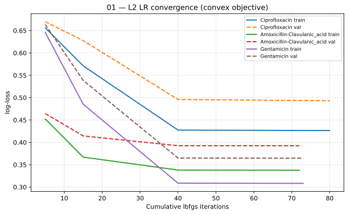
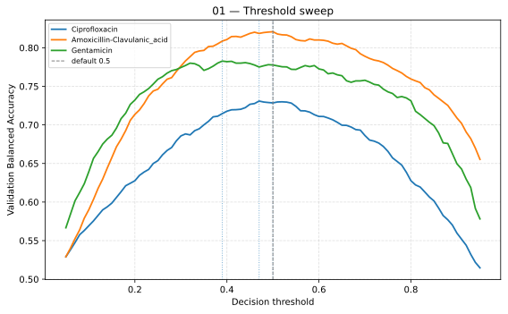
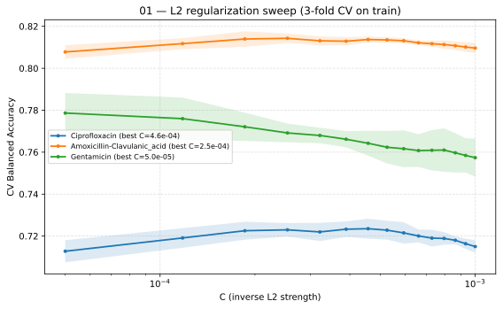

01 — Logistic Regression Analysis
Aggregated DRIAMS (A+B+C+D) — Top 3 drugs: Ciprofloxacin, Amoxicillin-Clavulanic acid, Gentamicin.
Objective
Baseline AMR prediction using logistic regression on pooled hospital data, establishing the simplest model against which all subsequent analyses are compared.
Approaches
Three variants are evaluated, all with solver lbfgs and
max_iter=5000:
- A) Raw LR
LogisticRegression with
penalty=None(no regularisation) and the default threshold of 0.5, with no tuning. Run on Ciprofloxacin only.- B) L2 LR + Threshold Tuning
LogisticRegression with
penalty='l2'(see L2 regularization) andclass_weight='balanced'(see Class weight). C, the inverse regularisation strength, is selected by 3-fold GridSearchCV over 15 values (5e-5 to 1e-3, scoring Balanced Accuracy) on the training set only; the CV score uses the default 0.5 threshold. The decision threshold is then tuned on the held-out validation split over 91 values (0.05 to 0.95) by Threshold Tuning.- C) PCA + L2 LR + Threshold Tuning
Dimensionality reduction via PCA (retaining 94% variance, fitted on the training set) followed by the same L2 LR and Threshold Tuning as B. Evaluates whether denoising spectra improves generalisation.
Preprocessing
log1p transform (stabilise variance)
Standardize to zero mean (fit on train only)
Train / Validation / Test Protocol
Species-stratified 70/15/15 (species-stratified split, seed 42): no species appears in more than one partition, forcing the model to generalise across species rather than memorising species-specific spectral features.
Train: preprocessing fitted, model fitted, C selected by 3-fold GridSearchCV, PCA basis fitted (approach C).
Validation: decision threshold tuned over 91 values (0.05–0.95) by Threshold Tuning; no model parameters are re-fitted.
Test: scored once with every choice frozen.
See Train / Validation / Test Protocol for the shared protocol, including the MLP internal validation split.
Key Findings
On Ciprofloxacin — the only drug where raw LR was evaluated — L2 regularisation with class weighting improves test performance substantially: BalAcc 0.72 vs 0.63 and AUC 0.80 vs 0.72.
PCA does not help: it slightly reduces test performance on all three drugs (up to 0.008 BalAcc and 0.005 AUC versus L2-only), so the full 6000-bin spectrum is retained.
With
class_weight='balanced', the optimal threshold sits near 0.5 (0.47 / 0.50 / 0.39 for Ciprofloxacin / Amoxicillin-Clavulanic acid / Gentamicin) and Threshold Tuning changes validation Balanced Accuracy by at most 0.005 — the default threshold is adequate for LR.Serves as the linear baseline for all subsequent models.
Training Diagnostics
Logistic regression is convex: the log-loss as a function of the
coefficients has a single global optimum and no local minima. Unlike a
neural network, there is therefore no epoch-wise loss curve to inspect;
the diagnostics below examine the optimiser trajectory, the threshold
sensitivity and the L2 strength (see 01-01-LR-Diagnostics.ipynb and
Train / Validation / Test Protocol).
Convergence


Convergence of the L2 LR on the pooled data: train (solid) and
validation (dashed) log-loss versus cumulative lbfgs iterations.
The model is refit with warm starts and increasing max_iter budgets
(5, 10, 25, 50, 100, 250, 500, 1000). Both train and validation log-loss
decrease monotonically and then flatten, reaching the optimum after 72
(Amoxicillin-Clavulanic acid), 73 (Gentamicin) and 80 (Ciprofloxacin)
cumulative iterations; larger budgets change nothing. The final train/val
log-loss pairs (0.338/0.393, 0.308/0.364, 0.426/0.493, gaps 0.055–0.067)
show a constant offset, not epoch-style overfitting: the gap is the price
of the L2 regularization and Class weight terms in the
objective, and both losses flatten together.
Threshold Sweep


Threshold sweep on the validation split; dotted lines mark each drug’s optimum, the gray dashed line is the default 0.5.
Validation Balanced Accuracy versus the decision threshold
(0.05–0.95). The optimum is broad and close to the default threshold
of 0.5 — 0.50 for Amoxicillin-Clavulanic acid (no gain), 0.47 for
Ciprofloxacin (+0.002) and 0.39 for Gentamicin (+0.005) — so
Threshold Tuning moves the metric by at most ~0.005. With
class_weight='balanced' the probabilities are already recentred, which
is why the default threshold is adequate for LR. AUC-ROC is
constant along each curve (0.796, 0.891, 0.856) because it does not depend
on the threshold.
L2 Strength (C) Sweep


L2 strength sweep: 3-fold CV Balanced Accuracy (mean ± SD) versus
C on a log scale.
3-fold CV Balanced Accuracy versus C
(log scale). Ciprofloxacin (C = 4.6e-4) and Amoxicillin-Clavulanic acid
(C = 2.5e-4) have interior optima, so the grid brackets the best value; for
Gentamicin the optimum sits at the lower grid edge (C = 5e-5, the minimum
tested), indicating the search range should be extended towards stronger
regularisation. The curves are flat (SD 0.002–0.010), so the exact value
of C is not critical.
Notebooks
01-LogisticAnalysis-Aggregated.ipynb— main analysis (A/B/C, figures, summary CSV)01-01-LR-Diagnostics.ipynb— convergence, threshold sweep, C-sweepOutputs:
results_lr_aggregated/andresults_lr_diagnostics/
References Back
LR methodology established here is reused and extended in: